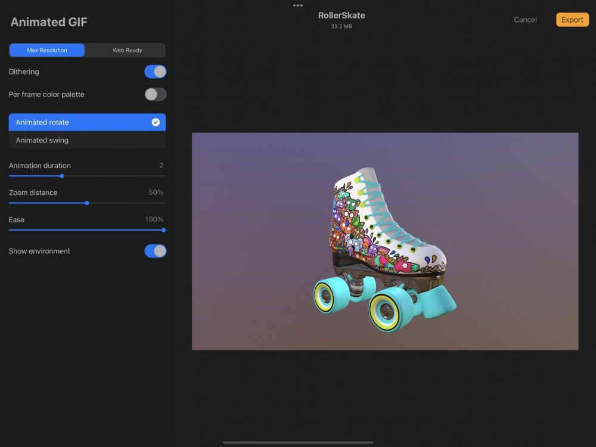
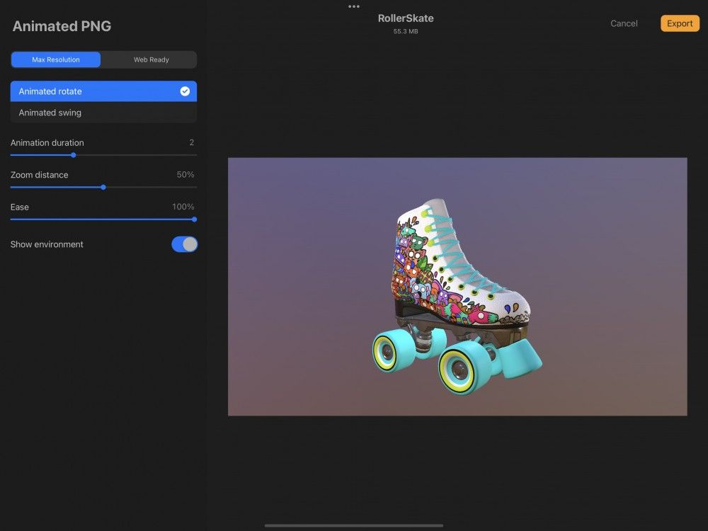
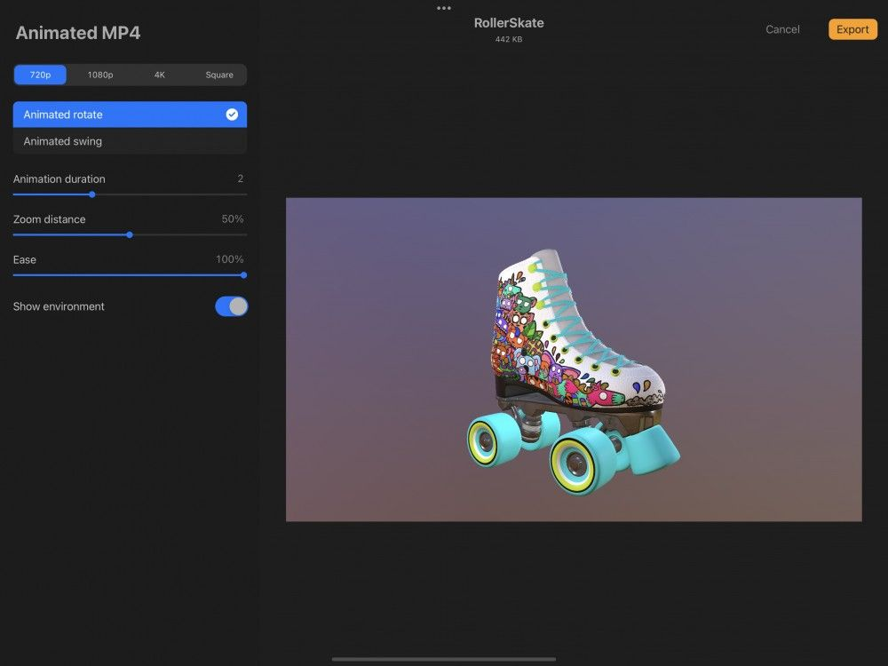

📖 Đã dịch sang tiếng Việt. Thuật ngữ chuyên môn giữ tiếng Anh — rê chuột để xem nghĩa (tooltip).
Share
Chia sẻ các sáng tạo 3D của bạn với mọi người. Xuất dưới dạng mô hình, ảnh, hoặc video ở nhiều định dạng hữu ích.
Procreate cho bạn ba tùy chọn để chia sẻ mô hình vẽ 3D:
- Share Model để chia sẻ tác phẩm theo các định dạng 3D
- Share Image để chia sẻ tác phẩm theo định dạng ảnh và video
- Share Textures để chia sẻ tác phẩm theo định dạng 3D dưới dạng ảnh đã làm phẳng
Share Model (chia sẻ mô hình)
Để truy cập các tùy chọn Share Model, chạm Actions > Share.
Trong phần Share Model của menu Share có ba định dạng lý tưởng để xuất dưới dạng tệp 3D. Mỗi định dạng có công dụng khác nhau và mang lại lợi ích khác nhau.
Procreate
Xuất mô hình 3D và tác phẩm dưới dạng tệp mà người dùng Procreate khác có thể dùng.
Chạm Actions → Share → Procreate.
USDZ
Xuất mô hình 3D và tác phẩm dưới dạng tệp mà người dùng MacOS, iPadOS và iOS khác có thể dùng trong các ứng dụng phần mềm 3D khác.
Chạm Actions → Share → USDZ.
OBJ
Xuất dưới dạng một thư mục chứa mô hình 3D, các họa tiết liên quan và các tệp tác phẩm mà một số ứng dụng 3D khác nhất định có thể dùng.
Chạm Actions → Share → OBJ.
Tệp OBJ là một trong những định dạng 3D được dùng phổ biến nhất và được dùng rộng rãi trong in 3D.
Share Image (chia sẻ ảnh)
Xuất 3D Painting dưới dạng ảnh JPEG, PNG hoặc TIFF, hoặc dưới dạng GIF, PNG, MP4 hoặc HEVC động.
Để truy cập các tùy chọn Share Image, chạm Actions > Share.
Trong phần Share Image của menu Share có ba định dạng để xuất tệp 3D dưới dạng ảnh và bốn định dạng cho video. Mỗi định dạng có công dụng khác nhau và mang lại lợi ích khác nhau.
Mọi ảnh hoặc video bạn xuất sẽ bao gồm ánh sáng và môi trường mà bạn đã dùng trên mô hình 3D.
Các ảnh sẽ phản ánh không gian làm việc của bạn, ghi nhớ góc và zoom cuối cùng mà mô hình 3D của bạn đã được định vị.
JPEG
Xuất tác phẩm 3D dưới dạng tệp JPEG đa năng, sẵn sàng cho web.
Chạm Actions → Share → JPEG, rồi chọn đích đến cho tệp.
Vì sao nên dùng định dạng .JPEG?
JPEG là định dạng 'có mất mát dữ liệu', sẽ làm phẳng tác phẩm của bạn thành một lớp duy nhất. JPEG đánh đổi một chút chất lượng hình ảnh để đổi lấy kích thước tệp nhỏ hơn nhiều. Là một trong những định dạng ảnh phổ biến nhất, JPEG được hỗ trợ rộng rãi, trở thành lựa chọn đa năng để chia sẻ dễ dàng.
PNG
Xuất tác phẩm 3D dưới dạng tệp chất lượng cao, sẵn sàng cho web và có độ trong suốt.
Chạm Actions → Share → PNG, rồi chọn đích đến cho tệp.
Vì sao nên dùng định dạng .PNG?
PNG là định dạng ‘không hao hụt' — nó sẽ làm phẳng tác phẩm nhưng giữ nguyên toàn bộ chất lượng ảnh. PNG lý tưởng khi bạn định in tác phẩm.
TIFF
Xuất tác phẩm dưới dạng tệp TIFF độ phân giải cao.
Chạm Actions → Share → TIFF, rồi chọn đích đến cho tệp.
Vì sao nên dùng định dạng .tiff?
TIFF làm phẳng các lớp nhưng bảo toàn hoàn hảo chất lượng ảnh. Điều này khiến tệp TIFF có kích thước khá lớn. Được dùng trong in ấn hàng thập kỷ, nó tương thích với mọi phần mềm chính. TIFF cũng phổ biến trong nhiều quy trình in, khiến nó trở thành lựa chọn tốt cho dân chuyên nghiệp.
GIF động
Xuất mô hình 3D kèm ánh sáng và môi trường dưới dạng animated GIF.

Chạm Actions → Share → Animated GIF để mở giao diện Animated GIF.
Chọn giữa Max Resolution (độ phân giải tối đa, chất lượng tốt hơn, tệp lớn hơn) hoặc Web Ready (sẵn sàng cho web, chất lượng thấp hơn, tệp nhỏ hơn). GIF động lặp theo mặc định.
Hoạt hình Web Ready GIF giới hạn bảng màu và có thể tạo dải màu dễ thấy trong video; để giảm thiểu điều này, hãy bật công tắc Dither.
Per frame color palette áp dụng một bảng màu giới hạn mới cho từng khung của bản xuất video thay vì trên toàn bộ video. Điều này có thể cải thiện chất lượng ảnh của video, nhưng cũng sẽ làm tăng kích thước tệp của bản xuất cuối.
Chạm công tắc Per frame color palette để bật tính năng này.
Animated GIF của bạn có thể hiển thị vật thể 3D đang xoay hoặc đung đưa. Chạm Animated rotate và Animated swing để xem bạn thích cái nào hơn cho bản xuất.
Animation duration xác định thời lượng của chu kỳ hoạt hình cho Animated GIF.
Dùng thanh trượt để tìm thời lượng phù hợp nhất với bạn. 0 là thời lượng ngắn nhất và nhanh nhất, còn 5 là dài nhất và chậm nhất.
Zoom distance xác định khoảng cách vật thể của bạn zoom out đến trong chu kỳ hoạt hình.
Dùng thanh trượt để xem cái nào phù hợp nhất với bạn. 0% giữ vật thể gần camera và cùng kích thước trong toàn bộ chu kỳ hoạt hình. 100% zoom out khỏi vật thể nhiều nhất, tạo hiệu ứng vật thể nảy ra xa camera và vào khoảng cách trước khi quay lại.
Ease có thể thêm nhiều hoặc ít quán tính tự nhiên hơn cho phần xoay hoặc đung đưa của hoạt hình. Ở 0% Ease, hoạt hình sẽ có vẻ tuyến tính và cơ học. Ở 100%, hoạt hình sẽ có vẻ chậm lại và nhanh lên ở một số điểm, mang lại cảm giác quán tính tự nhiên hơn.
Để thấy điều này rõ nhất, hãy đặt Zoom distance thành 0% rồi Ease thành 0%. Vật thể của bạn sẽ xoay hoặc đung đưa với tốc độ đều, có cảm giác không có quán tính tự nhiên. Trượt Ease lên 100% và vật thể sẽ nhanh lên, chậm lại trong chu kỳ xoay hoặc đung đưa, có cảm giác như có quán tính tự nhiên.
Vật thể 3D của bạn có thể được xuất có và không có nền môi trường. Chạm Show environment để hiện công tắc Transparent background. Bật công tắc để loại bỏ nền.
Khi Transparent background bật, thanh trượt Alpha threshold sẽ hoạt động. Nó có thể giúp xử lý mọi artifact có thể xuất hiện ở các cạnh của hoạt hình khi xuất Animated GIF. Trượt lên 100% để tối đa hóa Alpha Threshold nhằm giảm artifact.
PNG động
Xuất mô hình 3D kèm ánh sáng và môi trường dưới dạng animated PNG.

Chạm Actions → Share → Animated PNG để mở giao diện Animated PNG.
Chọn giữa Max Resolution (chất lượng tốt hơn, tệp lớn hơn) hoặc Web Ready (chất lượng thấp hơn, tệp nhỏ hơn). PNG động lặp theo mặc định.
Animated PNG của bạn có thể hiển thị vật thể 3D đang xoay hoặc đung đưa. Chạm Animated rotate và Animated swing để xem bạn thích cái nào hơn cho bản xuất.
Animation duration xác định thời lượng của chu kỳ hoạt hình cho Animated PNG.
Dùng thanh trượt để tìm thời lượng phù hợp nhất với bạn. 0 là thời lượng ngắn nhất và nhanh nhất, còn 5 là dài nhất và chậm nhất.
Zoom distance xác định khoảng cách vật thể của bạn zoom out đến trong chu kỳ hoạt hình.
Dùng thanh trượt để xem cái nào phù hợp nhất với bạn. 0% giữ vật thể gần camera và cùng kích thước trong toàn bộ chu kỳ hoạt hình. 100% zoom out khỏi vật thể nhiều nhất, tạo hiệu ứng vật thể nảy ra xa camera và vào khoảng cách trước khi quay lại.
Ease có thể thêm nhiều hoặc ít quán tính tự nhiên hơn cho phần xoay hoặc đung đưa của hoạt hình. Ở 0% Ease, hoạt hình sẽ có vẻ tuyến tính và cơ học. Ở 100%, hoạt hình sẽ có vẻ chậm lại và nhanh lên ở một số điểm, mang lại cảm giác quán tính tự nhiên hơn.
Để thấy điều này rõ nhất, hãy đặt Zoom distance thành 0% rồi Ease thành 0%. Vật thể của bạn sẽ xoay hoặc đung đưa với tốc độ đều, có cảm giác không có quán tính tự nhiên. Trượt Ease lên 100% và vật thể sẽ nhanh lên, chậm lại trong chu kỳ xoay hoặc đung đưa, có cảm giác như có quán tính tự nhiên.
Vật thể 3D của bạn có thể được xuất có và không có nền môi trường. Chạm Show environment để hiện công tắc Transparent background. Bật công tắc để loại bỏ nền.
Khi Transparent background bật, thanh trượt Alpha threshold sẽ hoạt động. Nó có thể giúp xử lý mọi artifact có thể xuất hiện ở các cạnh của hoạt hình khi xuất Animated PNG. Trượt lên 100% để tối đa hóa Alpha Threshold nhằm giảm artifact.
MP4 động
Xuất mô hình 3D kèm ánh sáng và môi trường dưới dạng animated MP4.

MP4 động cung cấp chức năng tương tự GIF và PNG động. Vì MP4 dùng mã hóa JPEG cho mỗi frames, chúng không thể có nền trong suốt. Kích thước tệp của chúng thường nhỏ hơn GIF và PNG động.
Chạm Actions → Share → Animated MP4 để mở giao diện Animated MP4.
Chọn giữa độ phân giải 720p, 1080p, 4K hoặc Square. Độ phân giải càng cao thì chất lượng càng tốt và kích thước tệp càng lớn. Ngoại lệ là Square, xuất ở 1080x1080p.
MP4 của bạn có thể hiển thị vật thể 3D đang xoay hoặc đung đưa. Chạm Animated rotate và Animated swing để xem bạn thích cái nào hơn cho bản xuất.
Animation duration xác định thời lượng của chu kỳ hoạt hình cho Animated MP4.
Dùng thanh trượt để tìm thời lượng phù hợp nhất với bạn. 0 là thời lượng ngắn nhất và nhanh nhất, còn 5 là dài nhất và chậm nhất.
Zoom distance xác định khoảng cách vật thể của bạn zoom out đến trong chu kỳ hoạt hình
Dùng thanh trượt để xem cái nào phù hợp nhất với bạn. 0% giữ vật thể gần camera và cùng kích thước trong toàn bộ chu kỳ hoạt hình. 100% zoom out khỏi vật thể nhiều nhất, tạo hiệu ứng vật thể nảy ra xa camera và vào khoảng cách trước khi quay lại.
Ease có thể thêm nhiều hoặc ít quán tính tự nhiên hơn cho phần xoay hoặc đung đưa của hoạt hình. Ở 0% Ease, hoạt hình sẽ có vẻ tuyến tính và cơ học. Ở 100%, hoạt hình sẽ có vẻ chậm lại và nhanh lên ở một số điểm, mang lại cảm giác quán tính tự nhiên hơn.
Để thấy điều này rõ nhất, hãy đặt Zoom distance thành 0% rồi Ease thành 0%. Vật thể của bạn sẽ xoay hoặc đung đưa với tốc độ đều, có cảm giác không có quán tính tự nhiên. Trượt Ease lên 100% và vật thể sẽ nhanh lên, chậm lại trong chu kỳ xoay hoặc đung đưa, có cảm giác như có quán tính tự nhiên.
Vật thể 3D của bạn có thể được xuất có và không có nền môi trường. Chạm Show environment để hiện công tắc Transparent background. Bật công tắc để loại bỏ nền.
HEVC động
Animated HEVC cung cấp chức năng tương tự animated MP4. Điểm khác biệt là HEVC có thể có nền trong suốt. Kích thước tệp của chúng thường nhỏ hơn Animated GIF và PNG.
Chạm Actions → Share → Animated HEVC để mở giao diện Animated HEVC.
Chọn giữa độ phân giải 720p, 1080p, 4K hoặc Square. Độ phân giải càng cao thì chất lượng càng tốt và kích thước tệp càng lớn. Ngoại lệ là Square, xuất ở 1080x1080p.
HEVC của bạn có thể hiển thị vật thể 3D đang xoay hoặc đung đưa. Chạm Animated rotate và Animated swing để xem bạn thích cái nào hơn cho bản xuất.
Animation duration xác định thời lượng của chu kỳ hoạt hình cho Animated HEVC.
Dùng thanh trượt để tìm thời lượng phù hợp nhất với bạn. 0 là thời lượng ngắn nhất và nhanh nhất, còn 5 là dài nhất và chậm nhất.
Zoom distance xác định khoảng cách vật thể của bạn zoom out đến trong chu kỳ hoạt hình.
Dùng thanh trượt để xem cái nào phù hợp nhất với bạn. 0% giữ vật thể gần camera và cùng kích thước trong toàn bộ chu kỳ hoạt hình. 100% zoom out khỏi vật thể nhiều nhất, tạo hiệu ứng vật thể nảy ra xa camera và vào khoảng cách trước khi quay lại.
Ease có thể thêm nhiều hoặc ít quán tính tự nhiên hơn cho phần xoay hoặc đung đưa của hoạt hình. Ở 0% Ease, hoạt hình sẽ có vẻ tuyến tính và cơ học. Ở 100%, hoạt hình sẽ có vẻ chậm lại và nhanh lên ở một số điểm, mang lại cảm giác quán tính tự nhiên hơn.
Để thấy điều này rõ nhất, hãy đặt Zoom distance thành 0% rồi Ease thành 0%. Vật thể của bạn sẽ xoay hoặc đung đưa với tốc độ đều, có cảm giác không có quán tính tự nhiên. Trượt Ease lên 100% và vật thể sẽ nhanh lên, chậm lại trong chu kỳ xoay hoặc đung đưa, có cảm giác như có quán tính tự nhiên.
Vật thể 3D của bạn có thể được xuất có và không có nền môi trường. Chạm Show environment để hiện công tắc Transparent background. Bật công tắc để loại bỏ nền.
Khi Transparent background bật, thanh trượt Alpha threshold sẽ hoạt động. Nó có thể giúp xử lý mọi artifact có thể xuất hiện ở các cạnh của hoạt hình khi xuất Animated HEVC. Trượt lên 100% để tối đa hóa Alpha Threshold nhằm giảm artifact.
Share Textures (chia sẻ họa tiết)
Xuất các Texture Set từ 3D Painting dưới dạng PNG tách thành các họa tiết material riêng biệt.
Chạm Actions → Share → Share Textures → PNG.
Mỗi họa tiết trong tệp 3D của bạn sẽ được xuất dưới dạng PNG theo tiêu đề của Texture Set, bao gồm:
- Ambient Occlusion
Color
- Metallic (tính kim loại)
Normal
- Roughness (độ nhám)
Kích thước và độ phân giải của các PNG thu được gắn liền với kích thước và độ phân giải gốc của mô hình 3D nhập vào Procreate.
Destinations (đích đến)
Chia sẻ tệp lên AirDrop, AirPrint, và bất kỳ ứng dụng hay dịch vụ nào có sẵn trong hệ thống Sharing của iOS.
Khi bạn đã chọn định dạng tệp, hệ thống sharing của iOS sẽ tự động kích hoạt.
Điều này cho phép bạn truy cập nhanh các chức năng hệ thống cơ bản như Copy, Save to Photos, Assign to Contact, Print, và Save to Files.
iOS Sharing cũng cho bạn quyền tự do xuất ảnh sang bất kỳ ứng dụng nào được liên kết với hệ thống iOS Sharing. Theo nguyên tắc, điều này bao gồm các ứng dụng phổ biến như AirDrop, Messages, Mail, Notes, và nhiều hơn nữa. Các ứng dụng khả dụng sẽ thay đổi tùy thuộc vào những ứng dụng bạn đã cài trên iPad.
Still have questions?
If you didn't find what you're looking for, explore our video resources on YouTube or contact us directly. We’re always happy to help.